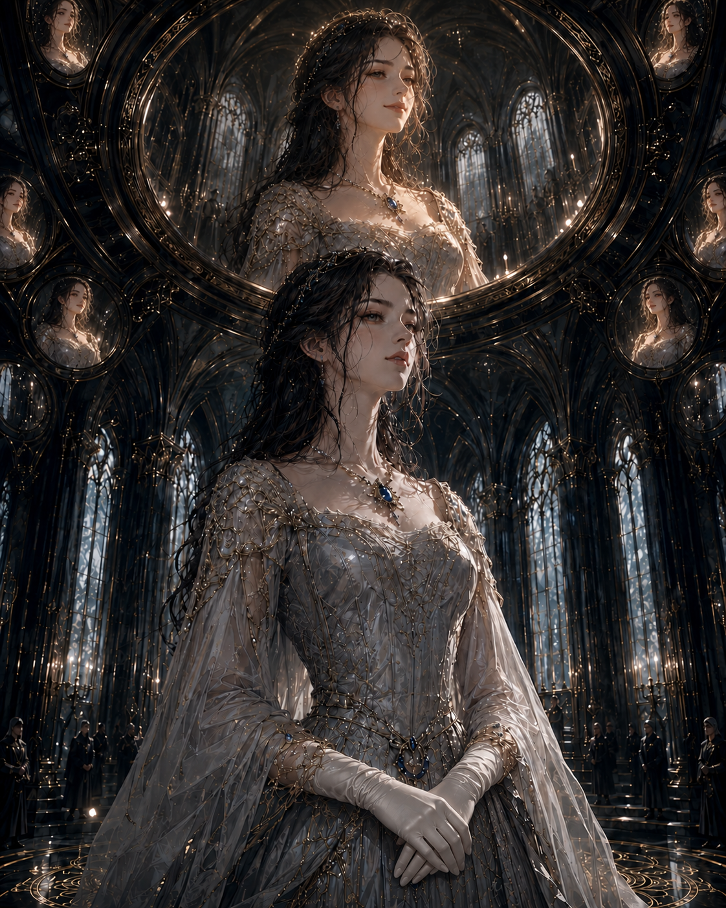
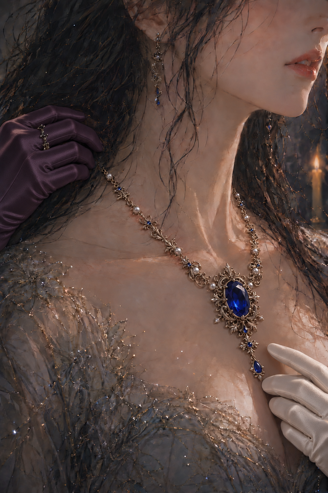

대전의 문이 열리자 수백 개의 촛불이 한꺼번에 아이리스를 향해 몸을 기울였다.
벽을 따라 세워진 촛대와 천장에서 늘어진 수정등, 기다란 식탁 위에 놓인 은제 등잔까지. 빛은 대전 안의 모든 얼굴을 비추고 있었지만, 그중에서도 아이리스의 얼굴에 가장 오래 머물렀다.
사람들은 이미 그녀를 기다리고 있었다.
이름의 날을 축하하는 말들 사이에는 언제나 같은 기다림이 있었다.
오늘도 아이리스 애시워스가 자신들이 믿어온 사람과 정확히 같은지 확인하려는 기다림.
커런이 내민 손을 잡은 채 대전으로 들어서자, 천장을 덮은 거울들이 아주 희미하게 밝아졌다.
사파이어가 가슴 위 한가운데에서 무겁게 흔들렸다.
드레스가 조일 때마다 아이리스의 호흡은 조금씩 얕아졌다.
아이리스는 자신에게 쏟아지는 시선들을 느꼈다.
왕국의 귀족들과 대신들, 각 영지에서 올라온 대표자들, 왕실과 가까운 사제와 기록관들까지. 그들은 입으로는 축복을 준비하고 있었지만, 눈으로는 아이리스의 걸음과 표정과 숨의 깊이를 재고 있었다.
괴로움은 인내로,
침묵은 품위로,
불편함은 절제로 불리는 자리였다.
아이리스가 대전 한가운데 마련된 원형 문양 위에 올라서자 연주가 멈췄다.
공기가 가라앉았다.
에드먼드 왕과 세라핀 왕비는 높은 단상 위에 나란히 앉아 있었다. 아버지는 만족스러운 표정이었고, 어머니는 아이리스의 드레스 자락에서 머리카락 끝까지 천천히 살펴보았다.
그 시선이 사파이어에 머물렀다.
세라핀의 입가가 아주 조금 부드러워졌다.
적절한 선택이었다는 뜻이었다.
커런은 아이리스를 원형 문양 위에 세워둔 뒤 한 걸음 물러났다.
“아이리스 애시워스.”
기록관리부 수장 펜이 그녀의 이름을 불렀다.
그는 대전 오른편의 작은 단상 앞에 서 있었다. 양손에는 아이리스의 지난 일 년이 적힌 두꺼운 장부가 들려 있었다.
“애시워스 왕가의 적법한 후계자이며, 다음 계승식을 통해 왕관을 이어받을 자.”
그의 목소리가 대전의 천장까지 닿았다.
아이리스의 머리 위에서 거울들이 일제히 빛났다.
수백 개의 거울 안에 같은 얼굴이 나타났다.
눈을 조금 낮춘 공주.
입술 끝에는 지나치게 밝지도, 오만하게 보일 만큼 얕지도 않은 미소가 걸려 있었다.
아이리스가 매일 아침 다시 완성했던 얼굴이었다.
거울은 그 얼굴을 실제보다 더 아름답게 돌려주었다.
피부에는 지친 기색이 없었고, 얕아진 호흡도 가슴 안쪽까지 묵직하게 번진 사파이어의 무게도 보이지 않았다.
사람들이 알고 있는 아이리스 애시워스만 남아 있었다.
“지난 일 년 동안 전하께서는 왕실이 요구하는 자비와 절제, 성실과 품위를 한결같이 유지하셨습니다.”
펜이 장부를 읽었다.
“공식 석상에서의 태도는 안정적이었으며, 백성을 향한 책무도 빠짐없이 수행하셨습니다. 사적인 감정이 공적인 판단을 흐린 사례는 발견되지 않았습니다.”
찬탄의 숨소리가 곳곳에서 흘러나왔다.
아이리스는 눈을 내리뜬 채 서 있었다.
사적인 감정.
마치 그런 것을 공적인 얼굴과 구분해본 적이 자신에게도 있었던 것처럼 들렸다.
펜이 마지막 장을 넘겼다.
“지난 일 년의 기록에는 전하께서 아이리스 애시워스라는 이름에서 벗어난 순간이 단 한 번도 없습니다.”
그것은 최고의 찬사였다.
대전 안의 사람들은 그렇게 받아들였다.
아이리스는 고개를 들지 않았다.
“거울의 판정을 청합니다.”
펜이 장부를 받침대에 내려놓았다.
판정 거울 아래에 서 있던 여자가 앞으로 나왔다.
인영원 대사제 칼리스타 렌이었다.
이마에서 광대까지 덮은 은 가면 아래로 입과 탁만 드러나 있었다. 입가에 내려앉은 가는 주름은 그녀가 말을 시작할 때조차 거의 움직이지 않았다.
대전 안의 시선들이 여자를 따라갔다가 천장으로 올라갔다.
중앙의 판정 거울이 서서히 밝아졌다.
아이리스의 인영 위로 금빛이 번졌다.
거울 속 그녀의 눈매는 실제보다 조금 더 온화해졌고, 입술에는 지친 기색 하나 없는 고요한 미소가 자리 잡았다.
오랫동안 견뎌온 사람의 얼굴은 사라지고, 기꺼이 모든 것을 감당할 준비가 된 후계자만 남았다.
우아함.
절제.
자비.
평온.
그 모든 인상이 하나의 얼굴 안에서 완벽하게 합쳐졌다.

칼리스타가 입을 열었다.
“인영에 흠결이 없습니다.”
낮은 목소리였다. 대전 끝에 닿을 때까지 어느 말끝도 흐려지지 않았다.
“아이리스 애시워스. 그 이름에 합당한 완전함을 인정합니다.”
펜의 펜촉이 장부 위를 움직였다.
그 순간 대전 안의 누군가가 먼저 박수를 쳤다.
곧 수백 개의 손이 뒤따랐다.
아이리스는 미소를 조금 더 깊게 만들었다.
감사합니다.
거울 속 공주의 미소도 깊어졌다.
그녀는 고개를 숙였다.
염려하지 않으셔도 됩니다.
수백 개의 거울 속 아이리스가 한 치의 흐트러짐도 없이 같은 동작을 반복했다.
“훌륭하구나.”
에드먼드가 말했다.
아버지의 목소리에는 감추지 않은 만족이 담겨 있었다.
“내년의 계승식도 오늘과 다르지 않을 것이다.”
박수가 다시 쏟아졌다.
아이리스는 고개를 들었다.
그녀의 얼굴은 이미 다음에 보여야 할 표정을 알고 있었다.
기쁨을 지나치게 드러내지 않는 감사.
자신의 성취를 당연하게 여기지 않는 겸손.
미래의 책임을 기꺼이 받아들이는 고요함.
모든 것이 정확했다.
단 한 가지를 제외하고.
사파이어 아래에서 심장이 한 번 불규칙하게 뛰었다.
아이리스가 숨을 멈추자 박동은 곧 제자리로 돌아왔다.
“전하께 축복을.”
“완벽한 후계자께 축복을.”
환호 속에서 거울의 금빛이 오래 머물렀다.
거울 속 얼굴은 눈부시게 아름다웠다.
너무 아름다워서 자신과는 아무런 관계도 없는 사람처럼 보였다.
연주가 다시 시작되었다.
판정 의식이 끝나자 원형 문양 주변에 서 있던 사람들이 한꺼번에 아이리스에게 다가왔다.
축하와 찬사가 물결처럼 밀려왔다.
“전하께서는 조금도 변하지 않으셨군요.”
“내년에는 역사상 가장 완벽한 계승식을 보게 될 겁니다.”
“이졸데 전하께서도 살아 계셨다면 무척 기뻐하셨을 것입니다.”
그 이름에 아이리스는 잠시 시선을 들었다.
말을 건넨 사람은 노년의 귀부인이었다. 그녀는 아이리스의 목에 걸린 사파이어를 바라보며 감상에 젖은 표정을 짓고 있었다.
“그분께 닿지 못했던 축복이 마침내 전하께 이어졌으니, 얼마나 다행스러운 일입니까.”
“감사합니다.”
아이리스는 대답했다.
거울 속 공주도 웃었다.
무엇을 느끼는지 헤아리기 전에 정확한 대답이 먼저 나왔다.
귀부인이 물러난 자리 너머로 낮은 대화가 들렸다.
“그 집 혼담은 결국 깨졌다지요. 따님의 인영에 금이 갔다던데.”
“낙인까지 가지는 않았다더군요.”
“그래도 혼인은 조심해야지요.”
잔이 부딪치는 소리가 말을 덮었다.
연회가 이어지는 동안 아이리스는 수십 번 비슷한 말을 들었다.
완벽하다는 말.
왕관을 위해 태어난 사람 같다는 말.
애시워스의 이름이 그녀에게서 가장 아름답게 완성된다는 말.
그 모든 말을 가장 가까운 자리에서 함께 듣고 있던 사람은 커런이었다.
커런은 대부분의 시간 동안 아이리스 곁에 머물렀다.
누군가 지나치게 가까이 다가오면 자연스럽게 사이에 섰고, 대화가 길어지면 아이리스가 피곤하지 않도록 대신 말을 받아주었다.
그의 배려는 늘 정확했다.
다만 아이리스가 무엇으로부터 쉬어야 하는지는 모르는 듯 했다.
그의 시선이 사파이어로 향했다.
커런이 미소 지었다.
“아주 잘 어울립니다. 마치 처음부터 전하의 것이었던 것처럼요.”
아이리스도 웃었다.
하지만 사파이어는 여전히 가슴 위 한가운데에 무겁게 놓여, 그 아래의 심장까지 짓누르는 듯했다.
“아이리스.”
누군가가 그녀의 오른쪽에서 이름을 불렀다.
아이리스가 고개를 돌렸다.
그녀의 오랜 벗인 메이지 로웰이 사람들 사이를 가르며 다가오고 있었다.
그녀는 연회장에서 가장 화려한 여자였다.
짙은 자주색 비단 드레스에는 검은 진주와 잘게 깎은 다이아몬드가 촘촘히 박혀 있었고, 목에는 길이가 다른 보석 목걸이가 세 겹으로 걸려 있었다. 손목을 움직일 때마다 여러 개의 팔찌가 맑은 소리를 냈다.
오래된 가문의 사람들은 보석 하나를 아무렇지 않게 걸치는 것으로 부를 드러냈지만, 메이지는 자신이 가진 모든 것이 보이도록 정성스럽게 배열했다.
그렇다고 촌스럽다고만 할 수는 없었다. 어떤 색이 자신에게 어울리는지, 사람들의 시선이 어디에 머무는지 정확히 아는 사람이었다.
그녀에게는 오래된 귀족 가문 특유의 무심한 우아함은 없었다. 그러나 메이지는 궁정이 원하는 화려함을 누구보다 능숙하게 만들어낼 줄 알았다.
메이지는 아이리스 앞에 이르러 그녀를 위아래로 천천히 살폈다.
시선이 가슴 위 한가운데 놓인 사파이어에 잠시 머물렀다.
“오늘은 누구도 전하에게서 눈을 떼지 못하겠네요.”
그녀가 웃으며 말했다.
메이지는 자신의 목에 겹쳐 걸린 보석들을 손끝으로 한 번 정리한 뒤 커런을 향해 몸을 돌렸다.
“로웰 영애.”
커런이 인사했다.
“노윅 경.”
메이지도 예를 갖추었다.
고개를 숙이는 각도는 정확했지만, 몸을 일으키는 순간이 아주 조금 빨랐다.
“잠시 공주 전하를 모셔가도 될까요?”
“어디로 말입니까?”
“동쪽 발코니에 오늘 밤 사용할 불꽃 장식이 준비되었다고 하더군요.”
메이지가 태연하게 말했다.
“전하께서 먼저 살펴보셔야 한답니다.”
그런 일정은 없었다.
메이지는 거짓말을 공식적인 전달 사항처럼 말했다.
커런은 잠시 아이리스를 살폈다.
“오래 자리를 비우시면 안 됩니다.”
“확인만 마치면 곧 돌아오겠습니다.”
메이지가 공손하게 대답했다.
커런은 여전히 미심쩍은 얼굴이었지만, 더 묻지는 않았다.
“다녀오십시오.”
아이리스는 메이지와 함께 사람들 사이를 빠져나왔다.
대전의 문이 닫히자 음악과 웃음소리가 한 겹의 벽 너머로 멀어졌다.
메이지는 말없이 걸었다.
동쪽 발코니로 향하지는 않았다.
대신 사용하지 않는 음악실의 문을 열어 아이리스를 안으로 이끌었다.
“메이지.”
“잠시만요.”
메이지가 문을 닫았다.
방 안에는 오래된 현악기와 악보대, 먼지가 내려앉은 의자들이 놓여 있었다. 벽의 거울에는 짙은 천이 드리워져 있었다.
아이리스는 그 천을 바라보았다.
“누가 거울을 가려두었지?”
“제가요.”
메이지가 대답했다.
“지난번엔 제가 가진 걸 너무 많이 드러낸다고 비추더군요. 덜 보일 생각은 없어서 그냥 거울을 가렸어요.”
“거울은 말을 하지 않아.”
“말보다 더 귀찮은 방식으로 알려주잖아요.”
메이지는 아이리스 앞으로 다가왔다.
“돌아봐요.”
“왜?”
“목을 볼게요.”
아이리스의 손이 본능적으로 사파이어 위로 올라갔다.
“괜찮아.”
“괜찮은 사람은 그렇게 숨을 쉬지 않아요.”
메이지가 아이리스의 뒤로 다가갔다.
차가운 손가락이 목걸이의 잠금쇠 주변을 조심스럽게 건드렸다.
“목이 다 쓸렸어요.”
“드레스 때문일 거야.”
“드레스는 목까지 올라오지 않잖아요.”
메이지의 손끝이 잠금쇠에 닿았다.
아주 작은 금속음이 났다.
아이리스는 즉시 뒤를 돌아보았다.
“풀지 마.”
생각보다 날카로운 목소리가 나왔다.
메이지의 손이 멈췄다.
“잠시만 풀면 돼요.”
“안 돼.”
“여긴 아무도 전하를 보고 있지 않아요.”
“그런 문제가 아니야.”
“그럼 무슨 문제인데요?”
아이리스는 대답하지 못했다.
지금 그것을 푸는 일은,
잘 갖춰진 차림을 스스로 흐트러뜨리는 일처럼 느껴졌다.
이상하게도 아이리스에게는 그 차이가 작지 않았다.
사파이어는 불편했다.
무거웠고 차가웠으며, 숨을 들이마실 때마다 가슴 위 한가운데에서 아주 조금씩 흔들렸다.
그런데도 그것을 벗는 일은 보석 하나를 내려놓는 일처럼 느껴지지 않았다.
“그대로 둬.”
아이리스가 말했다.
메이지는 잠시 그녀를 바라보다 손을 내렸다.
“모두 전하가 완벽하다고 말하더군요.”
그녀가 사파이어에서 손을 떼며 말했다.
“오늘은 이름의 날이니까.”
“알아요.”
메이지가 자신의 목에 겹쳐 걸린 보석들을 손끝으로 정리했다.
“저는 사람들의 시선을 붙잡으려면 이렇게까지 꾸며야 하는데, 전하는 가만히 서 있기만 해도 모두가 의미를 찾네요.”
목소리는 가벼웠다.
아이리스는 그 말에 대답하지 못했다.
메이지의 손목에서 검은 진주가 흔들렸다.
“네가 그려 보여준 잎이네. 검은 진주에 은잎이 잘 어울려.”
메이지는 손목을 살짝 돌려 잎이 겹쳐진 쪽을 보여주었다.
그녀의 시선이 다시 아이리스의 목으로 향했다.
“아픈 걸 알면서도, 아프게 하는 물건을 더 걱정하는 거예요?”
“아프지 않아.”
메이지는 곧바로 반박하지 않았다.
“그렇다면 다행이고요.”
그 대답은 믿는 사람의 말처럼 들리지 않았다.
“돌아가자.”
아이리스가 말했다.
“사람들이 기다리고 있어.”
메이지는 무언가 더 말하려다 그만두었다.
문을 열기 전, 그녀는 아이리스의 드레스 자락을 정리하고 사파이어가 가슴 중앙에 놓이도록 바로잡았다.
“이제 아무도 모를 거예요.”
메이지는 아이리스의 불편함을 가장 먼저 알아본 사람이었다.
그리고 다시 아무도 알아보지 못하게 만들어준 사람이기도 했다.

두 사람은 다시 연회장으로 돌아갔다.
문이 열리자 음악과 웃음, 향수와 촛농 냄새가 한꺼번에 밀려왔다.
아이리스는 걸음을 멈추지 않았다.
대전 안의 거울들이 그녀를 발견했다.
거울 속 공주의 얼굴은 조금도 달라지지 않았다.
메이지가 정돈해준 사파이어만이 가슴 위 한가운데에서 정확한 자리를 지키고 있었다.
커런이 그녀를 발견하고 다가왔다.
“불꽃 장식은 마음에 들었습니까?”
아이리스는 메이지를 보지 않았다.
“아주 아름다웠어요.”
거짓말은 너무 쉽게 나왔다.
커런은 안도한 듯 미소 지었다.
그의 시선이 아이리스의 목걸이로 향했다.
사파이어는 정확한 자리에 놓여 있었다.
“내일 변경 사절단을 맞이할 준비도 모두 끝났습니다.”
커런이 말했다.
“다만 북부에서 장부를 다시 작성해 보내지는 않겠다는 답이 왔습니다.”
“양식에 맞춰달라는 요청을 거절했나요?”
“사실을 바꾸어 적을 수는 없다고 하더군요. 대표가 원장부를 가지고 직접 설명하겠답니다.”
아이리스는 오전에 보았던 두 이름을 떠올렸다.
한 칸에 나란히 들어가지 못했던 이름들.
커런은 말을 이었다.
“베인가 사람들도 이곳의 질서를 직접 보면, 중앙이 무엇을 지키려 하는지 이해하게 되겠지요.”
아이리스는 대답하지 않았다.
“전하께서 그들을 맞이하시니 염려할 필요는 없을 겁니다.”
커런의 목소리에는 흔들림이 없었다.
“전하를 보는 것만으로도 우리가 지키려는 것이 무엇인지 알게 될 테니까요.”
아이리스는 천장의 거울을 올려다보았다.
그 안에는 완벽한 공주가 서 있었다.
왕관을 받을 준비가 된 후계자.
거울은 조금도 의심하지 않았다.
아이리스는 입술 끝을 올렸다.
감사합니다를 뜻하는 미소였다.
그날 밤 연회가 끝난 뒤에도 궁전은 늦게까지 잠들지 않았다.
시종들은 다음 날 도착할 사절단의 숙소를 점검했고, 기록관들은 베인가의 가계와 북부의 관습이 적힌 문서를 다시 분류했다.
대전에서는 변경 사람들이 처음 마주하게 될 거울의 각도까지 조정되었다.
그들이 자신들의 모습을 제대로 볼 수 있도록 하기 위해서라고 했다.
아이리스는 침실로 돌아온 뒤에야 사파이어 목걸이를 풀었다.
잠금쇠는 작은 소리를 내며 열렸다.
브리나가 목걸이를 받아 들다가 목덜미에 남은 붉은 자국을 보았다. 손이 잠시 머물렀지만 아무것도 묻지 않았다.
그녀는 손끝으로 자국을 한 번 쓸었다.
아프지는 않았다.
적어도 그렇게 생각하기로 했다.
브리나가 목걸이를 벨벳 상자 안에 눕히고 뚜껑을 닫았다.
“내일도 같은 목걸이를 준비할까요, 전하?”
아이리스는 잠시 상자를 바라보았다.
“그래.”
대답은 어렵지 않았다.
브리나가 벗어놓은 장갑을 챙겼다.
“브리나.”
“예, 전하.”
“이번에도 휴가를 미뤘더구나.”
장갑의 손가락을 펴던 손이 멈췄다.
“사절단이 오시는 동안은 일이 많을 테니까요.”
“지난번에도 행사가 있었지.”
브리나는 장갑을 가지런히 포갰다.
“제가 비우면 다른 시녀들이 제 일까지 맡아야 합니다.”
“집에는 가고 싶어?”
브리나가 고개를 들었다.
잠시 뒤 대답이 돌아왔다.
“예. 동생을 좀 보고 오고 싶습니다.”
“그럼 시녀장에게 말해둘게. 교대할 사람을 정하고, 휴가가 끝나면 네 자리로 돌아오는 것으로.”
“전하의 저녁 시중은…”
“연회가 없는 날에는 조금 일찍 물러가도 돼. 그동안 필요한 일은 시녀장과 조정하자.”
브리나는 손에 든 장갑을 내려다보다 고개를 숙였다.
“감사합니다, 전하.”
아이리스는 날짜를 정하면 알려달라고 말했다.
브리나는 짧게 대답한 뒤 장갑을 서랍에 넣었다. 상자와 옷을 정리하는 손은 다시 평소와 같아져 있었다.
브리나가 물러간 뒤에도 아이리스는 한동안 거울 앞에 서 있었다.
내일이면 변경에서 온 사람들이 그 얼굴을 보게 될 것이다.
왕국이 완벽하다고 판정한 아이리스 애시워스를.
아이리스는 거울 앞에 앉아 입술 끝을 아주 조금 올렸다.
감사합니다.
그다음에는 눈을 낮추었다.
염려하지 않으셔도 됩니다.
두 표정은 오늘도 정확했다.
세 번째 것은 여전히 얼굴을 갖지 못했다.
화장대 한쪽에는 내일의 접견 명단이 놓여 있었다.
아이리스는 첫 줄의 이름을 다시 읽었다.
홀리스 베인.
장부를 고쳐 쓰는 대신, 그대로 들고 오겠다는 사람이었다.